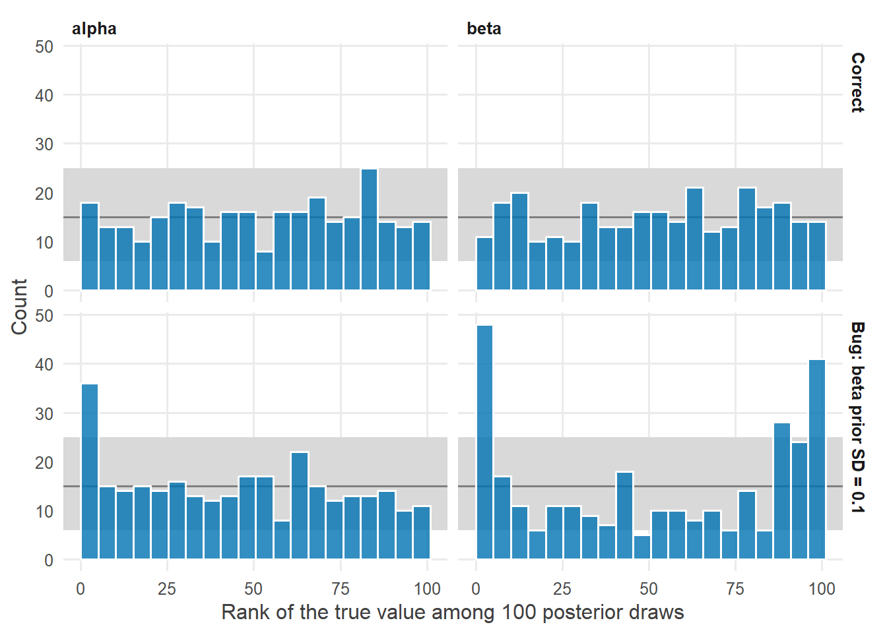

library(tidyverse)
library(cmdstanr)
library(posterior)
library(tidybayes)
source("R/theme.R")
source("R/utils.R")第 9 章 模拟数据，找回参数
怎样确认模型写对了？一次找回为什么不够？模拟校准（SBC）如何系统地检验模型与代码。
前面每一章都做了同一件事：用已知的真值生成数据，拟合模型，看后验是否覆盖真值。这已经是一种检验。但第 5 章的练习 4 也提醒过我们：一次找回或者一次没找回，都说明不了太多。
本章把“模拟数据、找回参数”从一次性的演示，变成一套系统的检验方法。它能发现那些不报错、不发散、诊断指标全部正常，却悄悄算错了的 bug。
1 本章要回答的问题
- 怎样确认模型写对了？
- 为什么用已知真值的模拟数据来检验模型？一次找回为什么不够？
- 怎样系统地检验？什么是模拟校准（simulation-based calibration, SBC）？
2 公式卡片
本章用一个新的模型类型：计数数据的泊松回归。
泊松回归
\[ \begin{aligned} y_i &\sim \operatorname{Poisson}(\lambda_i) \\ \log \lambda_i &= \alpha + \beta\, x_i \\[4pt] \alpha &\sim \operatorname{Normal}(2,\ 0.5) \\ \beta &\sim \operatorname{Normal}(0,\ 0.3) \end{aligned} \]
它和第 7 章的 logistic 回归是同一个结构：线性预测 + 链接函数（这里是 \(\log\)）+ 分布（这里是泊松分布）。
模拟校准的核心性质
如果按下面的方式重复很多次：
\[ \tilde{\theta} \sim p(\theta), \qquad \tilde{y} \sim p(y \mid \tilde{\theta}), \qquad \theta^{(1)}, \dots, \theta^{(L)} \sim p(\theta \mid \tilde{y}) \]
那么真值 \(\tilde{\theta}\) 在后验抽样中的秩（有多少个抽样比它小）
\[ r = \sum_{l=1}^{L} \mathbb{1}\big[\theta^{(l)} < \tilde{\theta}\big] \]
在 \(\{0, 1, \dots, L\}\) 上均匀分布。
3 模拟数据
研究情境：在 40 个样点调查鸟类，记录每个样点观察到的物种数，同时测量样点的植被覆盖度（已标准化）。先生成一份数据，做一次“找回”。
set.seed(2026)
N <- 40
alpha_true <- 2.2 # log expected species count at average cover
beta_true <- 0.25 # change in log count per SD of cover
sim_data <- tibble(
cover = rnorm(N),
species = rpois(N, lambda = exp(alpha_true + beta_true * cover))
)
summary(sim_data$species)#> Min. 1st Qu. Median Mean 3rd Qu. Max.
#> 4.000 6.000 9.000 9.375 11.250 26.0004 Stan 代码
// Chapter 9: Poisson regression
//
// y_i ~ Poisson(lambda_i)
// log lambda_i = alpha + beta * x_i
// alpha ~ Normal(2, 0.5)
// beta ~ Normal(0, 0.3)
data {
int<lower=0> N; // number of survey sites
vector[N] x; // habitat cover, standardized
array[N] int<lower=0> y; // number of bird species observed
}
parameters {
real alpha; // log expected count at average cover
real beta; // change in log expected count per SD of cover
}
model {
// Priors
target += normal_lpdf(alpha | 2, 0.5);
target += normal_lpdf(beta | 0, 0.3);
// Likelihood (log link built into poisson_log)
target += poisson_log_lpmf(y | alpha + beta * x);
}
generated quantities {
array[N] int y_rep = poisson_log_rng(alpha + beta * x);
}poisson_log_lpmf 与第 7 章的 bernoulli_logit_lpmf 一样，把链接函数合并进了分布：它直接接收 \(\log\lambda\)，在对数尺度上稳定计算。
5 R 端运行
mod_poisson <- cmdstan_model("stan/ch09_poisson.stan")
fit_once <- mod_poisson$sample(
data = list(N = N, x = sim_data$cover, y = sim_data$species),
seed = 2026, chains = 4, parallel_chains = 4, refresh = 0
)#> Running MCMC with 4 parallel chains...
#>
#> Chain 1 finished in 0.1 seconds.
#> Chain 2 finished in 0.1 seconds.
#> Chain 3 finished in 0.1 seconds.
#> Chain 4 finished in 0.1 seconds.
#>
#> All 4 chains finished successfully.
#> Mean chain execution time: 0.1 seconds.
#> Total execution time: 0.3 seconds.fit_once$summary(c("alpha", "beta"), "mean", ~ quantile(.x, c(0.05, 0.95)), "rhat")#> # A tibble: 2 × 5
#> variable mean `5%` `95%` rhat
#> <chr> <dbl> <dbl> <dbl> <dbl>
#> 1 alpha 2.22 2.13 2.30 1.00
#> 2 beta 0.227 0.141 0.314 1.00两个真值（\(\alpha = 2.2\)，\(\beta = 0.25\)）都落在 90% 区间内。模型写对了吗？
6 后验整理与可视化
6.1 一个看似正确的程序
现在请看另一个程序。它和上面的程序只差一个字符：
model {
// Priors
target += normal_lpdf(alpha | 2, 0.5);
target += normal_lpdf(beta | 0, 0.1); // BUG: should be 0.3
// Likelihood (log link built into poisson_log)
target += poisson_log_lpmf(y | alpha + beta * x);
}\(\beta\) 的先验标准差本应是 0.3，被误写成了 0.1。用同一份数据拟合：
mod_bug <- cmdstan_model("stan/ch09_poisson_bug.stan")
fit_bug_once <- mod_bug$sample(
data = list(N = N, x = sim_data$cover, y = sim_data$species),
seed = 2026, chains = 4, parallel_chains = 4, refresh = 0
)#> Running MCMC with 4 parallel chains...
#>
#> Chain 1 finished in 0.1 seconds.
#> Chain 2 finished in 0.1 seconds.
#> Chain 3 finished in 0.1 seconds.
#> Chain 4 finished in 0.1 seconds.
#>
#> All 4 chains finished successfully.
#> Mean chain execution time: 0.1 seconds.
#> Total execution time: 0.2 seconds.fit_bug_once$summary(c("alpha", "beta"), "mean", ~ quantile(.x, c(0.05, 0.95)), "rhat")#> # A tibble: 2 × 5
#> variable mean `5%` `95%` rhat
#> <chr> <dbl> <dbl> <dbl> <dbl>
#> 1 alpha 2.22 2.14 2.31 1.00
#> 2 beta 0.182 0.103 0.259 1.00fit_bug_once$diagnostic_summary()#> $num_divergent
#> [1] 0 0 0 0
#>
#> $num_max_treedepth
#> [1] 0 0 0 0
#>
#> $ebfmi
#> [1] 0.9920739 1.0308603 1.1054724 1.1699932编译通过，采样顺利，Rhat 完美，没有发散。真值也落在区间内。只靠一次找回，这个 bug 完全看不出来。
6.2 重复很多次：模拟校准
要让 bug 现形，需要重复很多次，并且每次的真值都从先验中抽取。下面的函数完成一轮模拟：
- 从先验中抽取一组真值 \((\tilde{\alpha}, \tilde{\beta})\)；
- 用这组真值生成一份数据；
- 拟合模型，取出后验抽样；
- 计算真值在后验抽样中的秩，并记录 90% 区间是否覆盖真值。
sbc_one <- function(sim_id, mod, n_obs = 40) {
set.seed(1000 + sim_id)
# 1. draw true parameters from the prior (the data-generating process)
alpha_sim <- rnorm(1, 2, 0.5)
beta_sim <- rnorm(1, 0, 0.3)
# 2. simulate data
x <- rnorm(n_obs)
y <- rpois(n_obs, exp(alpha_sim + beta_sim * x))
# 3. fit the model
fit <- mod$sample(
data = list(N = n_obs, x = x, y = y),
seed = sim_id, chains = 1, iter_warmup = 500, iter_sampling = 1000,
refresh = 0, show_messages = FALSE, show_exceptions = FALSE
)
# thin to 100 draws to reduce autocorrelation
draws <- fit$draws(c("alpha", "beta"), format = "df") |>
as_tibble() |>
slice(seq(10, 1000, by = 10))
# 4. rank and coverage
tibble(
sim = sim_id,
variable = c("alpha", "beta"),
true = c(alpha_sim, beta_sim),
rank = c(sum(draws$alpha < alpha_sim), sum(draws$beta < beta_sim)),
covered = c(
between(alpha_sim, quantile(draws$alpha, 0.05), quantile(draws$alpha, 0.95)),
between(beta_sim, quantile(draws$beta, 0.05), quantile(draws$beta, 0.95))
)
)
}对正确的程序和有 bug 的程序，各重复 300 次：
n_sims <- 300
sbc_results <- bind_rows(
map(1:n_sims, sbc_one, mod = mod_poisson) |> list_rbind() |> mutate(model = "Correct"),
map(1:n_sims, sbc_one, mod = mod_bug) |> list_rbind() |> mutate(model = "Bug: beta prior SD = 0.1")
) |>
mutate(model = fct_inorder(model))6.3 区间覆盖率
sbc_results |>
group_by(model, variable) |>
summarise(coverage_90 = mean(covered), .groups = "drop") |>
pivot_wider(names_from = variable, values_from = coverage_90) |>
knitr::kable(digits = 3)| model | alpha | beta |
|---|---|---|
| Correct | 0.89 | 0.910 |
| Bug: beta prior SD = 0.1 | 0.84 | 0.693 |
正确的程序中，90% 区间覆盖真值的比例接近 0.90，这正是“90% 区间”应有的含义。有 bug 的程序中，\(\beta\) 的覆盖率明显低于 0.90：它的区间太窄，又被错误的先验拉向 0。
\(\alpha\) 的覆盖率也有所下降，尽管 \(\alpha\) 的先验并没有写错。原因在于对数链接：期望计数的平均水平大约是 \(\exp(\alpha + \beta^2/2)\)（当 \(x\) 服从标准正态时），\(\beta\) 被压向 0，\(\alpha\) 就要相应偏高来补偿。一个参数的 bug，会通过模型结构影响到其他参数。
6.4 秩直方图
覆盖率只检查了一个区间。秩直方图检查的是整个后验分布：
n_bins <- 20
n_ranks <- 101 # ranks take values 0, 1, ..., 100
band <- qbinom(c(0.005, 0.995), size = n_sims, prob = 1 / n_bins)
ggplot(sbc_results, aes(x = rank)) +
annotate("rect", xmin = -Inf, xmax = Inf, ymin = band[1], ymax = band[2],
fill = "grey85") +
geom_hline(yintercept = n_sims / n_bins, colour = "grey50") +
geom_histogram(breaks = seq(0, n_ranks, length.out = n_bins + 1),
fill = f2s_colors[["post"]], colour = "white", alpha = 0.8) +
facet_grid(model ~ variable) +
labs(x = "Rank of the true value among 100 posterior draws", y = "Count")
有 bug 的程序中，\(\beta\) 的秩大量堆积在两端：真值常常比几乎所有后验抽样都大，或者都小。这说明后验过于狭窄，而且偏向 0。\(\alpha\) 的秩则在左端堆积：真值常常小于几乎所有后验抽样，即 \(\alpha\) 被系统性地高估，与上面覆盖率的分析一致。
正确的程序中，偶尔有一两个柱子略微越出灰色带，这是正常的随机波动：灰色带是每个柱子单独的 99% 范围，图中一共有 40 个柱子。判断时要看整体形状，而不是盯着某一个柱子。
7 为什么这样写
7.1 为什么用模拟数据，而不是真实数据？
用真实数据拟合时，我们不知道参数的真值，也就无法判断结果对不对。模拟数据是唯一一个我们知道答案的场合。如果模型连自己生成的数据都无法正确推断，就更不能指望它在真实数据上给出可靠的结论。
模拟还有一个额外的好处：写模拟代码的过程，迫使你把模型的每一个假设都想清楚。第 5 章说过：能写出模拟代码，说明你真正理解了这个模型是怎样生成数据的。
7.2 为什么一次找回不够？
一次找回的结果受两种偶然性影响：真值恰好取在哪里，数据恰好抽到了什么。
- 真值落在区间内，可能只是运气好。90% 区间本来就会覆盖大多数真值，即使模型有 bug，后验偏得不太远时也一样。
- 真值落在区间外，也可能只是运气不好。正确的模型也有 10% 的机会让 90% 区间落空。
本章的 bug 就是一个典型例子：先验写窄了，后验被拉向 0，但对于 \(\tilde{\beta} = 0.25\) 这样不太大的真值，区间仍然能覆盖它。只有重复很多次，覆盖率和秩分布才能把系统性的偏差暴露出来。
7.3 为什么真值要从先验中抽取？
模拟校准的理论保证依赖于一个条件：模拟时生成真值的分布，必须与模型中的先验完全一致。在这个条件下，如果算法和代码都正确，把“从先验抽真值、生成数据、拟合后验”重复下去，平均意义上后验就会“复原”先验，真值的秩便是均匀的 (Talts 等, 2018)。
这也意味着，SBC 检验的是模拟代码与 Stan 程序之间的一致性。本章的 bug 正是两者不一致：模拟时用 0.3，Stan 程序里写成了 0.1。同样，似然写错、链接函数写错、数据的列对错位置，都会造成不一致，都会在秩直方图中现形。
7.4 怎样读秩直方图？
| 形状 | 含义 |
|---|---|
| 近似均匀，落在灰色带内 | 没有发现问题 |
| U 形（两端高） | 后验过窄，过于自信 |
| 倒 U 形（中间高） | 后验过宽，过于保守 |
| 向左或向右倾斜 | 后验系统性地偏高或偏低 |
本章的 \(\beta\) 呈现 U 形：错误的先验 \(\operatorname{Normal}(0, 0.1)\) 让后验过窄，而当真值离 0 较远时，后验又被拉向 0，真值便落在后验的一端。
7.5 为什么要稀疏化抽样？
秩的均匀性要求后验抽样近似独立。MCMC 抽样有自相关，所以本章从 1000 次抽样中每隔 10 个取一个，得到 100 个近似独立的抽样。秩的取值范围因此是 0 到 100。
7.6 实践中怎样用？
完整的 SBC 需要拟合成百上千次，对于大模型并不便宜。实践中可以分层次使用：
- 每个模型都做：用一组合理的真值生成数据，拟合一次，看能否找回（前面每一章都是这样做的）；
- 重要的模型、新写的模型做：小规模 SBC，比如 100–300 次；
- 发表或交付之前做：完整 SBC，检查所有关键参数。
R 中有专门的 SBC 宏包，可以自动完成本章手工实现的流程，并提供更多的诊断图。本章手写一遍，是为了让每一步都看得见。
8 常见错误
| 错误做法 | 后果 | 正确做法 |
|---|---|---|
| 用一组固定真值做一次找回，就认为模型正确 | 系统性 bug 可能被偶然性掩盖 | 重复多次，真值从先验抽取 |
| 模拟真值的分布与 Stan 中的先验不一致 | 秩不均匀，误以为模型有问题（或反之掩盖问题） | 模拟代码与 Stan 程序使用同一套先验 |
| 不稀疏化，直接用自相关的抽样计算秩 | 秩直方图出现虚假的不均匀 | 稀疏化到近似独立 |
| 只看覆盖率 | 只检查了一个区间，可能漏掉其他问题 | 同时看秩直方图 |
| 只在真实数据上拟合，从不做模拟 | 无从判断模型与代码是否正确 | 把“模拟—找回”作为每个模型的标准步骤 |
9 练习
练习 1 固定真值的覆盖率
把 \(\beta\) 的真值固定为 0.25（不从先验抽取），对有 bug 的程序重复 100 次。\(\beta\) 的 90% 区间覆盖率是多少？再把真值固定为 0.6 重复一遍。比较结果并解释。
提示参考答案
coverage_fixed <- function(beta_fixed, mod, n_rep = 100, n_obs = 40) {
map_lgl(1:n_rep, \(k) {
set.seed(5000 + k)
x <- rnorm(n_obs)
y <- rpois(n_obs, exp(2.2 + beta_fixed * x))
fit <- mod$sample(data = list(N = n_obs, x = x, y = y), seed = k, chains = 1,
iter_warmup = 500, iter_sampling = 1000, refresh = 0,
show_messages = FALSE, show_exceptions = FALSE)
b <- fit$draws("beta", format = "df")$beta
between(beta_fixed, quantile(b, 0.05), quantile(b, 0.95))
}) |>
mean()
}
tibble(beta_true = c(0.25, 0.6)) |>
mutate(coverage_bug = map_dbl(beta_true, coverage_fixed, mod = mod_bug))#> # A tibble: 2 × 2
#> beta_true coverage_bug
#> <dbl> <dbl>
#> 1 0.25 0.75
#> 2 0.6 0.15真值为 0.25 时，有 bug 的程序覆盖率约为 0.75，低于 0.90，但在任何一次单独的运行中，这点差别都看不出来；真值为 0.6 时，错误的窄先验把后验强烈地拉向 0，覆盖率跌到很低的水平。这说明 bug 的“可见程度”取决于真值落在哪里，也正是 SBC 要从先验中抽取真值、覆盖各种情形的原因。
练习 2 另一种 bug
在模拟代码中，把数据生成改为 y <- rpois(n_obs, exp(alpha_sim + beta_sim * x)) + 1（每个计数都多加了 1），而 Stan 程序保持正确。预测秩直方图会出现什么形状？
提示参考答案
每个计数都被系统性地抬高，相当于期望值变大。模型会把这种抬高归因于更大的 \(\alpha\)，所以 \(\alpha\) 的后验系统性地高于真值。真值在后验抽样中的秩会偏小，秩直方图向左倾斜（左端高、右端低）。
\(\beta\) 也可能受到影响：加 1 对小计数的相对影响更大，会让“覆盖度越高、计数越多”的关系看起来更弱。
这个练习说明：SBC 检验的是模拟代码与 Stan 程序的一致性，不论 bug 出在哪一边，它都能发现。
练习 3 样本量对秩分布有影响吗？
把每次模拟的观测数从 40 改为 10。对于正确的程序，秩直方图还应该是均匀的吗？覆盖率呢？
提示参考答案
仍然应该是均匀的，覆盖率也仍然应该接近 0.90。SBC 的均匀性不依赖于样本量：样本量小，后验更宽，但只要模型和代码正确，后验仍然是“校准”的。
变化在于区间的宽度：样本量越小，后验越接近先验，区间越宽。这也提醒我们，SBC 检验的是“推断是否正确”，而不是“推断是否精确”。精确程度要看后验的宽度，也就是看数据能提供多少信息。
练习 4 后验预测检查与 SBC 有什么不同？
第 5 章做过后验预测检查。它和本章的 SBC 检验的是同一件事吗？
提示参考答案
不是。两者回答的问题不同：
| 后验预测检查 | 模拟校准（SBC） | |
|---|---|---|
| 使用的数据 | 真实观测数据 | 模型自己生成的模拟数据 |
| 检查的问题 | 模型能否描述真实数据？ | 代码和算法能否正确推断模型的参数？ |
| 发现的问题 | 模型设定不当（比如忽略了异方差、零膨胀） | 代码 bug、模拟与模型不一致、采样器失灵 |
一个完整的工作流程两者都需要：先用 SBC 确认“代码算的是我想算的模型”，再用后验预测检查确认“这个模型适合我的数据”。
10 小结
- 模拟数据是唯一知道答案的场合：用它检验模型是否写对，是每个模型的标准步骤。
- 一次找回不够：bug 可能被偶然性掩盖，正确的模型也可能偶然“没找回”。
- 模拟校准：真值从先验抽取，重复“模拟—拟合”，检查秩是否均匀、覆盖率是否符合名义水平。
- SBC 检验的是模拟代码与 Stan 程序的一致性，能发现不报错、不发散、诊断全部正常的 bug。
11 延伸
- 下一章进入第三单元：第 10 章 层级模型：部分池化。
- Stan 模型库中，作者为泊松混合回归等模型制作了模拟校准示例，可以作为本章方法在复杂模型上的应用参考。
12 参考资料
- 模拟校准方法的原始文献 Talts 等 (2018)。
- 模拟、拟合、检验在贝叶斯工作流程中的位置，见 Gelman 等 (2020)。
- Stan User’s Guide 的 Simulation-Based Calibration 一章给出了在 Stan 中实现 SBC 的方法 (Stan Development Team, 2026)。
- 泊松回归见 Bayesian Data Analysis 第 16 章关于广义线性模型的讨论 (Gelman 等, 2013)。
Gelman, A., Carlin, J. B., Stern, H. S., Dunson, D. B., Vehtari, A., & Rubin, D. B. (2013). Bayesian Data Analysis (3 版). CRC Press.
Gelman, A., Vehtari, A., Simpson, D., Margossian, C. C., Carpenter, B., Yao, Y., Kennedy, L., Gabry, J., Bürkner, P.-C., & Modrák, M. (2020). Bayesian Workflow. https://arxiv.org/abs/2011.01808
Stan Development Team. (2026). Stan User’s Guide (Version 2.40). https://mc-stan.org/docs/stan-users-guide/
Talts, S., Betancourt, M., Simpson, D., Vehtari, A., & Gelman, A. (2018). Validating Bayesian Inference Algorithms with Simulation-Based Calibration. https://arxiv.org/abs/1804.06788